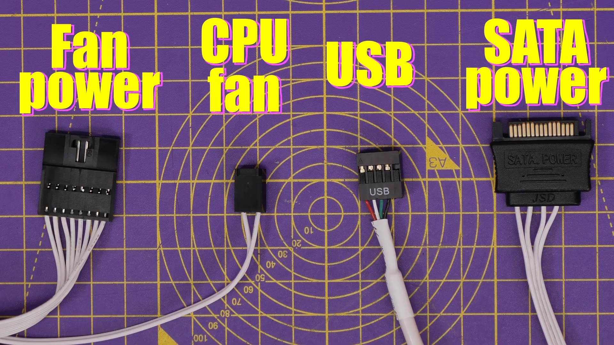
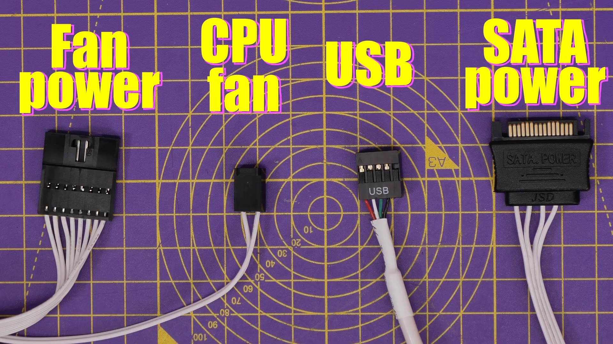

Tutorial de cómo montar un PC gamer paso a paso
Una vez se dispone de todos los componentes, empezará el montaje. Para ello, como paso previo, buscaremos una mesa lo más despejada posible y desempaquetaremos todos los componentes para disponer de ellos más fácilmente y trabajar a gusto. Dejaremos todas las herramientas a mano.
1. Preparación del área de trabajo
Habrá que colocar la alfombrilla antiestática sobre la mesa donde vayamos a montar el PC y la pulsera en nuestra muñeca (en contacto con la piel, no con la ropa). Habrá que conectar ambas pinzas metálicas a una superficie metálicas como el chasis del PC.


2. Instalación de la CPU en la placa base
Pondremos la placa base sobre la alfombrilla para evitar el contacto directo con la mesa. Seguidamente, buscaremos el zócalo de AM5 y levantaremos la palanquilla metálica. Agarraremos el procesador y, alineando la marquita triangular con la del zócalo, lo insertaremos suavemente sin aplicar fuerza. Finalmente, bajaremos la palanquita para fijarlo en su lugar.
3. Instalación de la Memoria RAM
Localizaremos los slots de la memoria RAM y abriremos las cuatro pestañitas. Seguidamente, y uno por uno, insertaremos todos los módulos en cada uno de estos slots, asegurándonos de alinear las muescas de los módulos adecuadamente con la de los slots y presionando firmemente hasta escuchar un "clic!".
Como en nuestro caso todas las tarjetas tienen la misma capacidad y usaremos tantas como slots de RAM hay, no nos preocuparemos por la posición ni el orden en que los coloquemos.


4. Instalación de los SSD M.2
Ubicaremos las ranuras M.2 de la placa base y retiraremos la cubierta metálica del disipador M.2 aflojando los tornillos. Colocaremos uno de los SSD en un ángulo de unos 30º alineado con la ranura, empujaremos suavemente hasta que encaje y lo fijaremos con el tornillo de retención.
Repetiremos el proceso para el resto de los SSDs, y recolocaremos la cubierta metálica en su sitio.
5. Atornillamiento de la placa base
Abriremos y retiraremos los paneles laterales del chasis y lo tumbaremos. Agarraremos nuestra placa base y la insertaremos dentro del chasis, alineándola con los puertos traseros. Seguidamente, la atornillaremos.


6. Instalación de la fuente de alimentación
Cogeremos nuestra PSU y la insertaremos en el compartimento inferior del chasis hacia la rejilla (hacia abajo). La atornillaremos bien a la parte trasera del chasis. Prepararemos y/o directamente conectaremos los siguientes cables necesarios:
- 24 pines ATX: a la placa base (conector de 24 pines).
- 8 (o 4+4) pines: a uno de los dos conectores de la alimentación para la CPU.
- 16 pines (12VPHWR): a la GPU (lo conectaremos en cuanto la instalemos).
7. Adaptación de la placa al sistema de refrigeración
Ahora, desatornillaremos los tornillos de encima y debajo de la CPU y quitaremos los clips existentes. Localizaremos, de la caja de la refrigeración líquida, los tornillos respectivos a AM5 y los dejaremos "marcados" encima, sin atornillarlos, con la parte más gruesa hacia dentro.


8. Adaptación del refrigerador
Al ser una placa AMD, tendremos que cambiar las pestañas de los tornillos del refrigerador por las de AMD. Quitaremos la tapa de plástico de seguridad de este, ubicaremos las pestañas de AMD5, quitaremos las que ya están y las sustituiremos por las nuevas.
9. Instalación de los ventiladores
Agarraremos los ventiladores y los pondremos encima del ventilador, alineados, para atornillarlos con los tornillitos largos. Luego, atornillaremos el conjunto a la parte superior del chasis, alineándolo adecuadamente con la rejilla.
Seguidamente, agarraremos el cable de los ventiladores por el extremo grueso y lo conectaremos al conector cerca de los propios ventiladores. Por el otro extremo, conectaremos:
- El cable CPU al puerto CPU_FAN.
- El cable USB a un puerto USB abajo del todo de la placa (para controlar la pantallita mediante software).
- El cable SATA a otro cable SATA hacia la fuente de alimentación.
- El cable de alimentación de los ventiladores al cable que sobresale por debajo de los ventiladores en sí.
 


10. Montaje de la refrigeración (+ pasta térmica)
Como el fabricante no determina si la pasta térmica viene preaplicada, observaremos si ya hay. Si no la hubiera, cogeremos el tubo de pasta térmica y aplicaremos una pequeña cantidad en forma de X en la CPU.
Hecho esto, retiramos los tornillos que habíamos "marcado" alrededor de la CPU para poder colocar el bloque de la bomba de la CPU y la atornillamos en cruz con estos.
11. Instalación de la tarjeta gráfica
Localizaremos la ranura PCI Express x16 en la placa base y retiraremos/desatornillaremos tantas chapas metálicas del chasis como sean necesarias para nuestra tarjeta gráfica (unos 3 o 4 slots). Insertaremos la GPU en la ranura hasta escuchar un "clic!" y la fijaremos en el chasis por la parte de detrás con tornillos.
Conectaremos el cable 16 pines que habíamos reservado previamente en la fuente de alimentación a la tarjeta gráfica.


12. Conexión de los Cables del Chasis
Para acabar, antes de las comprobaciones finales y la instalación de Sistema Operativo y periféricos, haremos las conexiones del chasis a la placa base:
- Cable del botón de encendido y de reinicio (a los conectores JFP)
- El cable de Power Switch a PWR_SW
- El cable de reset a RESET_SW
- Cable de audio del panel frontal (a JAUD)
- Cable del conector USB 3.2 Gen2 tipo C (al cabezal USB 20Gbps Type C)
- Cables de los conectores USB 3.2 Gen1 tipo A (a dos de los 4 headers USB 5Gbps Type A)
13. Reordenado de cables, comprobaciones y cierre
Opcionalmente, podríamos desatornillar la tapa trasera del chasis y poner algo de orden con el cableado, en caso que haya mucho caos y/o haya potenciales problemas de espacio por aglutinamiento de cables.
Antes de cerrar el equipo, haremos un par de comprobaciones finales, entre las cuales:
- Revisión de las conexiones de energía. Comprobar que el cable ATX, el de la CPU y el PCIe están bien conectados a la placa base y/o a la fuente de alimentación
- Verificación de las conexiones del panel frontal. Mirar que los cables de encendido, reinicio, de audio y de los puertos USB están correctamente conectados.
- Comprobación de las conexiones de refrigeración. Asegurarnos de que el cable grueso con sus cuatro sub-cables están correctamente enchufados a su sitio.
- Asegurado de los componentes internos. Chequear que la CPU y su disipador están bien asentados y atornillados, y que tanto los SSD como la RAM están bien instalados en sus slots (y, sobre todo, que no se mueven).
Si todas estas comprobaciones están en orden, podremos recolocar el panel lateral del chasis, pero sin cerrarlo.
14. Encendido y prueba POST
En el siguiente paso, montaremos un monitor y lo conectaremos, junto al teclado, al ratón y los altavoces, a sus correspondientes
puertos, más la fuente de alimentación a la red eléctrica. Ahora toca el primer encendido y la realización de una prueba POST (Power-On Self-Test).
Con el chasis abierto para observar mejor la actividad de nuestro equipo, pulsaremos el botón de Power y comprobaremos que todo se
ejecute de forma correcta. También estaremos alerta por si se escucha algún pitido.
Si el sistema muestra la BIOS y no se puede observar ningún comportamiento anómalo dentro del chasis, el montaje ha sido un éxito.
15. Setup y Windows 11
Apagaremos el equipo y conectaremos los periféricos que vayamos a utilizar de forma habitual, incluido el segundo monitor. Montaremos la silla. Conectaremos la memoria USB que contiene nuestro Sistema Operativo y procederemos con la instalación.